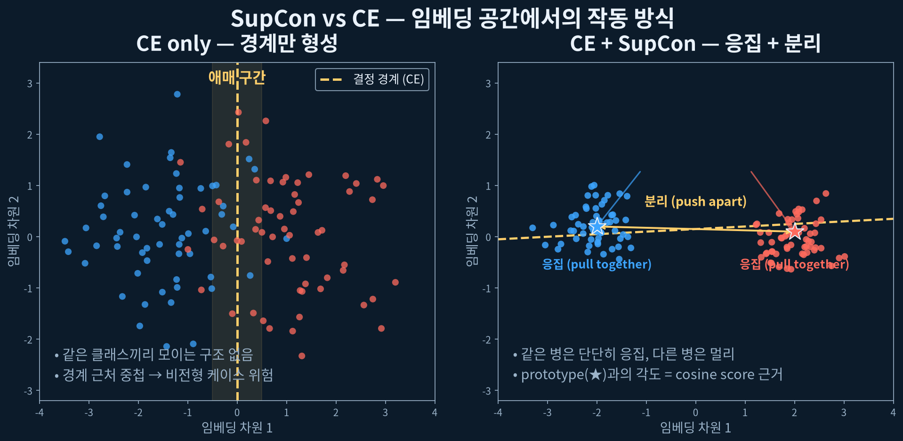
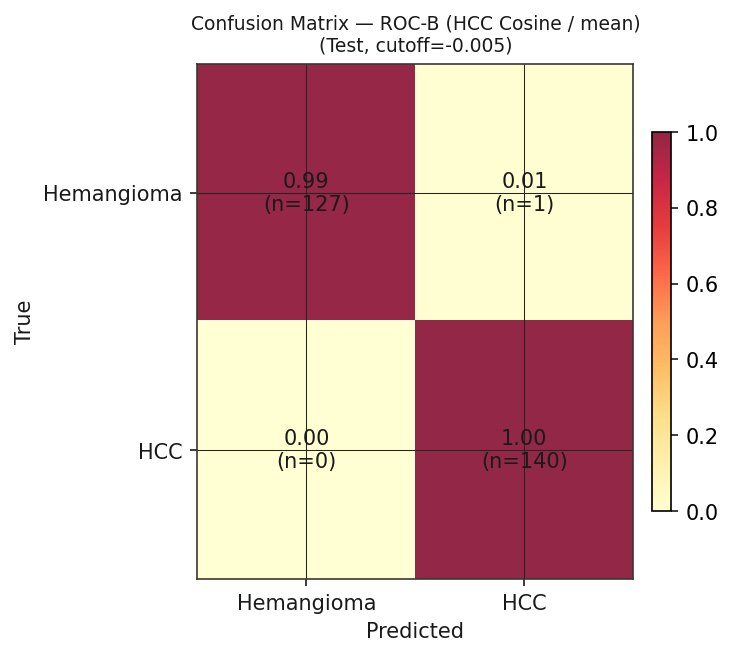
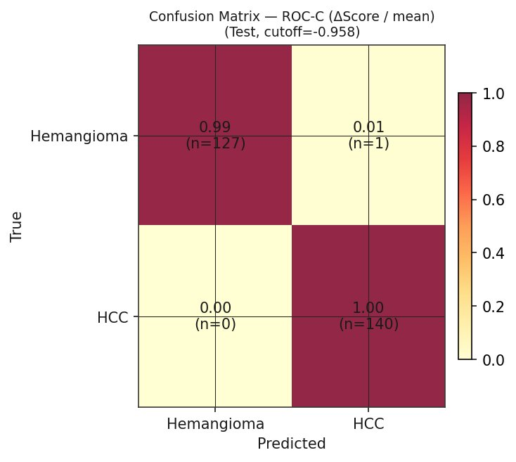
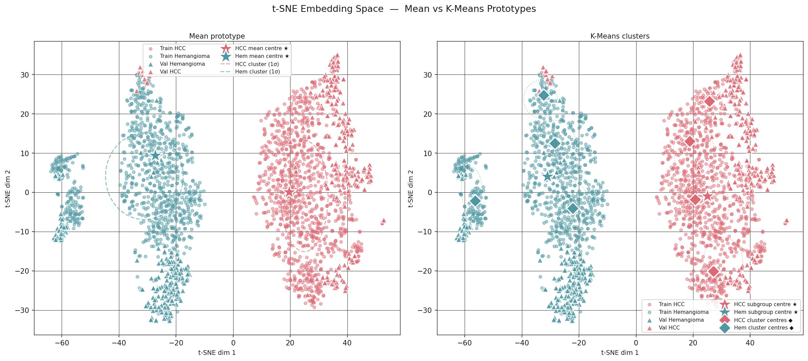
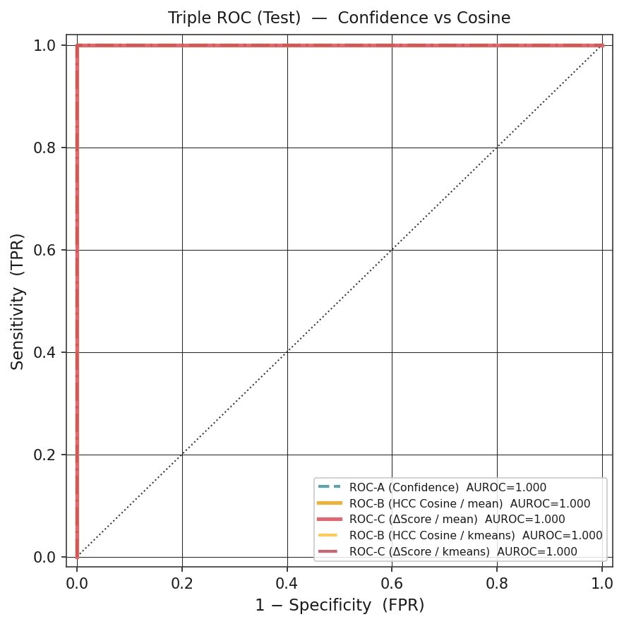
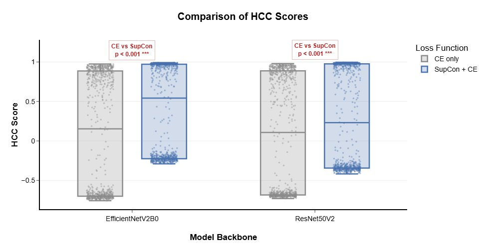

HCC Cosine Score와 Confidence Score의 상호보완적 임상적 의의
예수병원 가정의학과 R3 김현수
B-mode 초음파는 고위험군 HCC 감시의 일차 도구이나, 조기 병변에 대한 민감도가 제한적이며 검사자 의존성이 크다.
Tzartzeva K, et al. Gastroenterology 2018
전체의 10–15%가 비전형 소견
고분화 HCC가 고에코성 혈관종 패턴을 모사
비전형 혈관종이 악성을 모사
저에코 테두리·이질적 에코·경계 불명
▸ AFP 상승을 동반한 비전형 혈관종이 HCC로 오진된 증례도 보고됨
Minami 2023 · Chou 2017 · Sirli 2015
임상의는 단순한 이진 결정이 아닌, "이 병변이 전형적 HCC와 얼마나 닮았는가"를 평가하는 연속적 추론을 수행한다.
LI-RADS 역시 연속적 위험 단계로 구성되며, 임상 판독은 본래 스펙트럼 위에서 이루어집니다.
ACR LI-RADS v2018
기존 AI 출력
병변 → HCC 확률
"전형 HCC와의 닮은 정도" 정보가 소실
Guo 2017 · Liu 2019
단일 분류 출력을 넘어, 임상의의 유사성 기반 추론을 수치화한 이중 출력 표지자를 B-mode 초음파에서 도출하는 학습·분석 체계를 제안한다.
HCC Cosine Score, Δscore — 비전형성을 연속값으로 정량화
softmax를 확률이 아닌 결정 강도로 재정의
SupCon의 필수성 및 소규모 데이터에서 SSL 한계 실증
주요 결과
애매 구간에서 오답 구제(salvage) 효과 확인
Train / Val / Test 분할
| 환자 | 영상 | Train | Val | Test | |
|---|---|---|---|---|---|
| 혈관종 | 323 | 1,267 | 886 | 253 | 128 |
| HCC | 421 | 1,389 | 972 | 277 | 140 |
| 합계 | 744 | 2,656 | 1,858 | 530 | 268 |
원 데이터셋 SMC-LUD 1,021명 5,385장(Tak J, et al. Sci Data 2026) 중 품질 기준 통과 clean subset
CNN — 필터가 이미지를 훑으며 국소 패턴 추출
ViT — 이미지를 패치로 나누고 전역 문맥 파악
본 연구는 두 방식을 결합(hybrid) — CNN으로 국소 특징을, Transformer로 전역 문맥을 함께 추출한다.
임베딩 공간에서의 거리·각도 = 영상 간 의미적 유사도. 본 연구는 이를 cosine similarity로 정량화한다.
CNN이 잡은 국소 특징을 Transformer 4겹이 전역적으로 재조합 → 하나의 임베딩 벡터에서 두 종류의 점수를 동시 산출
Cosine similarity = 두 벡터가 이루는 각도 θ의 코사인 값
닮을수록(같은 방향) 각도가 작아지고 cosine↑ (최대 1)
총 손실 = 분류 손실 + 유사도 정렬 손실
$$\mathcal{L} \;=\; \mathcal{L}_{\mathrm{CE}} \;+\; \lambda\,\mathcal{L}_{\mathrm{SupCon}}$$교차 엔트로피 $\mathcal{L}_{\mathrm{CE}}$ — 정답 클래스 확률을 최대화하여 분류 경계 형성
$$\mathcal{L}_{\mathrm{CE}} = -\sum_{c=1}^{C} y_c \log p_c$$$p_c$: softmax 출력(클래스 $c$ 확률) · $y_c$: one-hot 정답 라벨
SupCon $\mathcal{L}_{\mathrm{SupCon}}$ — 같은 병변은 가까이, 다른 병변은 멀리
$$\mathcal{L}_{\mathrm{SupCon}}=\sum_{i}\frac{-1}{|P(i)|}\sum_{p\in P(i)}\log\frac{\exp(\mathbf{z}_i\!\cdot\!\mathbf{z}_p/\tau)}{\sum_{a\in A(i)}\exp(\mathbf{z}_i\!\cdot\!\mathbf{z}_a/\tau)}$$$\mathbf{z}_i, \mathbf{z}_p$
임베딩 벡터 (정규화)
$P(i)$
$i$와 같은 클래스 표본 집합
$\tau$, $\lambda$
temperature · 손실 가중치

CE는 클래스가 경계 너머에 있기만 하면 충분 → 임베딩 구조 무관. SupCon는 같은 병을 한 점으로 응집시켜 cosine score의 근거를 형성
교차 엔트로피 손실로 분류 경계 형성. 임베딩 구조는 학습 목적이 아님.
동일 클래스는 가까이, 타 클래스는 멀리. 임베딩에 응집성·분리성 부여.
레이블 없는 사전학습 → CE+SupCon 미세조정. SSL 추가 효용 검증용.
Ablation 목적 ▸ (1) SupCon이 cosine 표지자의 타당성을 확보하는가, (2) SSL 사전학습이 추가 이득을 주는가를 동시 검증
Confidence score
HCC softmax 값. 확률이 아닌 결정 강도로 정의
HCC Cosine score
HCC prototype 4종과의 평균 유사도 = "전형 HCC와의 닮은 정도"
Δscore
HCC 닮음 − 혈관종 닮음. 두 클래스 간 상대적 위치
▸ 임계값은 검증 세트에서만 Youden's J로 결정 후 테스트 세트에 고정 적용하여 낙관적 편향 배제
Chen 2019 · Li 2018 · DeLong 1988
Test 혼동행렬
| 예측 혈관종 | 예측 HCC | |
|---|---|---|
| 실제 혈관종 | 127 | 1 |
| 실제 HCC | 0 | 140 |
위양성 1건, 위음성 0건
동일 데이터셋 선행연구 baseline 정확도 98.88%를 상회
① Confidence score

② HCC cosine score

③ Δscore
세 출력이 동일한 판정 — cosine 기반 표지자가 주 출력과 동등한 분류 수행

"닮은 정도" 점수가 신뢰하려면 같은 병이 같은 자리에 모여야 하며, 이 시각화가 이를 확인한다.
Figure 1 · t-SNE visualization (test set)

| 출력 | AUROC | DeLong p |
|---|---|---|
| ① Confidence | 1.000 | — (기준) |
| ② HCC cosine | 1.000 | 1.000 |
| ③ Δscore | 1.000 | 1.000 |
차이가 통계적으로 유의하지 않음 → cosine 표지자는 confidence score와 동등한 변별력
Figure 3 · Triple ROC (Test). DeLong 검정

Δscore(두 그룹 간 거리)는 유의 변화 없음 — 간 실질·초음파 modality의 공통 배경이 양쪽에 강하게 작용한 것으로 추정
Figure 4 · True HCC cases (val+test, n=381)
confidence score 0.4–0.6, 가장 애매한 결정 경계 부근
일반 분류 모델
HCC를 위음성으로 오분류
정확도 42.9%
+ cosine 표지자 (SupCon)
모두 HCC로 정확 식별
정확도 100% (FN=0)
의의 ▸ 단일 출력이 내리지 못하는 판정을 임베딩 공간의 "닮은 정도"가 보완 — 비전형 케이스 감별에서 이중 출력의 임상적 보완 효용 입증
전 모델 비교 (Test, HCC cosine AUROC)
| 모델·학습 | Conf. | HCC cosine |
|---|---|---|
| Eff · CE | 1.000 | 1.000 |
| Eff · CE+SupCon | 1.000 | 1.000 |
| Eff · NNCLR | 1.000 | 0.893 |
| Res · NNCLR | 0.999 | 0.068 |
시사점 ▸ 소규모 의료 영상에서는 레이블 기반 지도학습(CE+SupCon)이 우월
Table 4B · NNCLR = 사전학습 후 CE+SupCon 미세조정 2단계
① 비전형 병변의 triage
이진 출력이 놓치는 애매 케이스를 "닮은 정도"로 보완. 추가 검사가 필요한 병변 식별
② 임상 추론과 모델 추론의 일치
임상의의 유사성 기반 추론·의사결정 방식을 딥러닝 모델의 출력 구조에 일치시키려는 설계
③ 출력 해석론 전환
softmax를 확률이 아닌 결정 강도로 재정의 — 과잉 확신 경고
④ 실용적 학습 원칙
소규모 의료 데이터에서는 지도학습 우선. 사전학습은 대규모 데이터에서 의미
한계 (Limitations)
향후 연구 (Future Works)
▸ AUROC 1.000은 동일 데이터 내 결과 — 외부 데이터 일반화 검증이 다음 관건
향후 과제: 외부 다기관 검증 · AFP 대비 독립 기여 평가 · SSL 민감도 분석
김현수 · 예수병원 가정의학과 · github.com/kimhs950627/hcc-vs-hemangioma